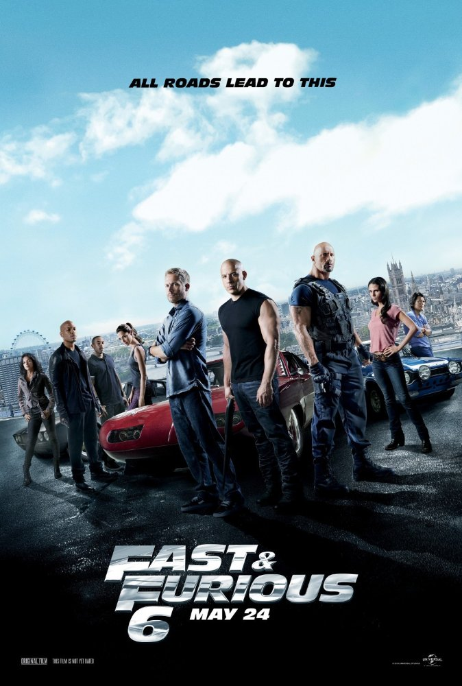

My Favourit Movies
Home
IP MAN
GENRE: action, drama, biography, sports
RELEASE DATE: 12 December 2008 China
DESCRIPTION: Yip Man is a recognized kung fu master who lives in Foshan,
a city famous for his martial arts schools. Yip Man practices
Wing Chun and although he is the strongest fighter in the city,
he does not have his own school, and he does not take disciples.
At home, he spends only light sparring with his friends to point
out each other's mistakes. Years pass, China is captured by warlike
Japanese, and Yip Man turns out to be one of the few who, even under
the most severe conditions of occupation, do not forget about the honor
dignity and, of course, the wisdom that kung fu bears in itself.
Transformers: The Last Knight
GENRE: fantasy, action, adventure,
RELEASE DATE: 22 June 2017 Canada, USA, China
DESCRIPTION: Optimus Prime disappeared. People are at war with the Transformers.
The key to our future is buried in the secrets of the past, in the hidden
history of the Transformers on Earth ... The mission of saving the world
lies on the shoulders of a diverse company consisting of Keid Jaeger,
Bumblebee, an English lord and a professor from Oxford. It's time to act!
Victims will become heroes. Heroes will become villains. Only one world stands:
theirs or ours.
Fast and the Furious 6

GENRE: thriller, drama, crime
RELEASE DATE: 23 May 2013 USA
After Dominick and Brian visited Rio, where they robbed and
overthrew the empire of the thief-in-law, their team received 100 million,
and our heroes were scattered all over the world.
But their habit of ever living on the run does
not give them peace. Meanwhile, Hobbs tracked the organization
of deadly mercenary drivers in twelve countries. The only way to stop this criminal
group is to outdo them on the streets,so Hobbs asks Dominic to assemble his elite
team in London. For this he promises a full pardon for
Dominique and his friends so that they can
finally return home to their family.
AVATAR
GENRE: fiction, action, drama, adventure
RELEASE DATE: 17 December 2009 USA, UK
Jake Sully - a former Marine, chained to a wheelchair.
Despite the infirm body, Jake is still a warrior in his heart.
He gets a mission to travel a few light years to the base
of earthlings on the planet Pandora, where the corporations
mined a rare mineral, which is of great importance
for the Earth's escape from the energy crisis.